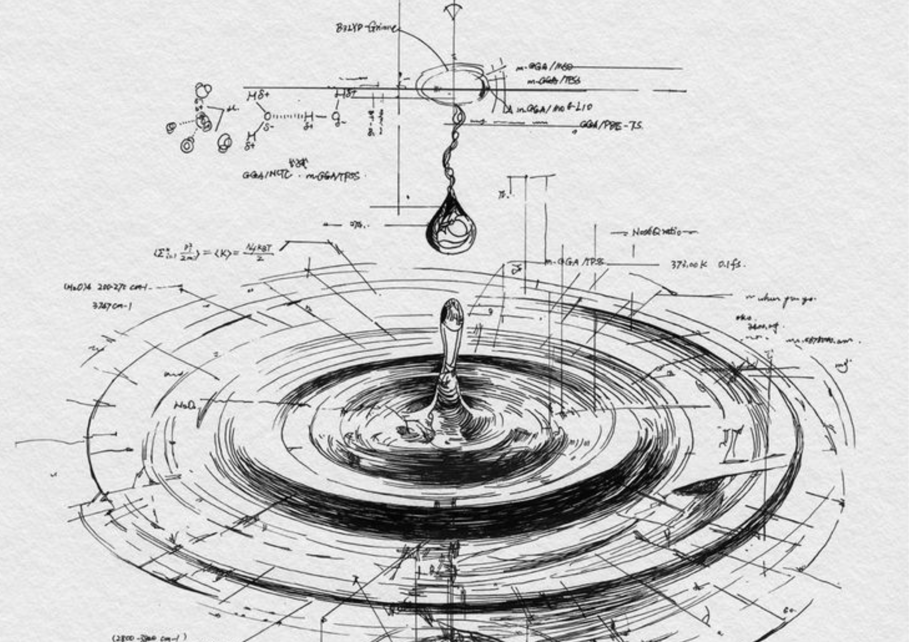
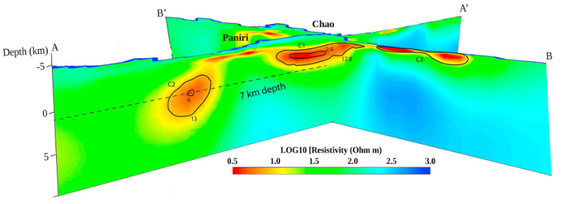
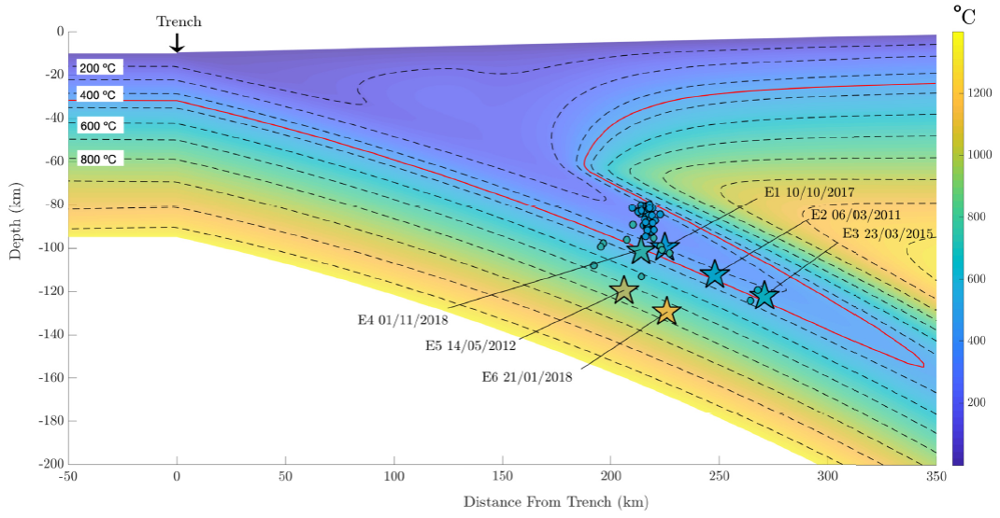
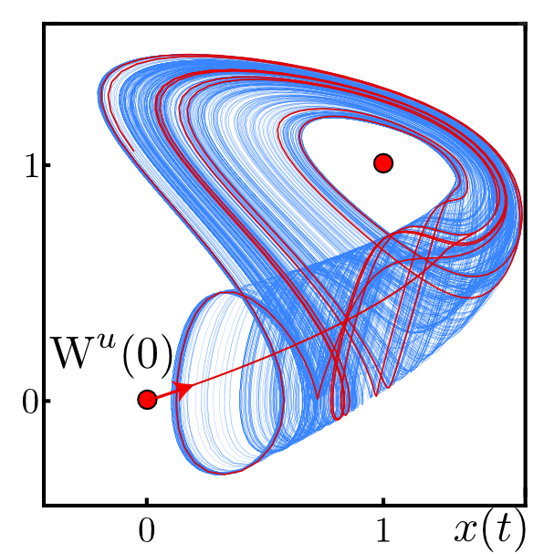

About Me
I’m a geoscientist with a PhD in applied mathematics to climate science and an MSc in geophysics, with a focus on subsurface passive exploration. I have experience in fieldwork, data analysis, and modeling, as well as advanced programming skills. My areas of expertise are varied, with a focus on geophysical electromagnetic methods, data analysis, and dynamical systems.
Background
Physics
In 2013, I finished my bachelor’s degree in theoretical physics at the University of Chile. During my time in physics, I contributed to the Group of Nanomaterials (GNM), where I worked on computational modeling to study how the melting temperature depends on particle size. I studied how melting occurs gradually at nanoscale systems rather than abruptly as temperature increases. Unlike bulk materials, where melting happens at a sharp point.
Geophysics
After finishing my bachelor’s degree, I turned to more applied science with my MSc in geophysics at the University of Chile, motivated by my love for the physics associated with natural phenomena. I specialized in passive exploration methods, specifically electromagnetic methods. There, I worked with the Center of Excellence in Geothermia of the Andes (CEGA), exploring a large volcanic chain known as Paniri-Toconce, where I determined the extent of its magmatic chamber and the distribution of nearby geothermal centers, work published in the Journal of Geophysical Research: Solid Earth. I also contributed to several geophysical exploration campaigns in the north and south of Chile, including the Atacama Desert, where I worked in the El Tatio geothermal system, the Láscar volcano, and the sedimentary basin in the Altiplano-Puna. In the Maule region of southern Chile, I contributed to the study of the megavolcano Laguna del Maule and to diverse geophysical campaigns in central Chile.
In 2015, I worked on projects more closely aligned with industry. During the final years of my MSc in geophysics, I collaborated with CEGA and I began working with the Geophysics Applied Center at the University of Chile, where I later served as a fieldwork leader and researcher from 2018 to 2019. My projects varied from sedimentary basin characterization and mining to groundwater exploration for the winery industry.
Mathematics
In 2021, to better understand the core of the modeling process, I began a PhD in applied mathematics. My research focused on developing and analyzing complex models of climate phenomena. During my PhD, I studied dynamical systems in a delay-differential equation model of the Atlantic Meridional Overturning Circulation, characterizing and analyzing the different dynamics that could occur, contrasting them with data and identifying relevant transition points.
Scientific Research
Conductivity Distribution Beneath the San Pedro-Linzor Volcanic Chain, North Chile, Using 3-D Magnetotelluric Modeling.
My master's research consists of a geophysical exploration using magnetotelluric methods to study the San Pedro-Linzor volcanic chain in Northern Chile, published in the Journal of Geophysical Research (doi). We identify possible magmatic structures and hydrothermal systems associated with Holocene volcanoes. Our findings were supported by previous petrochemical studies pointing to crystallization depths of approximately 8 km. We developed three-dimensional resistivity models based on magnetotelluric data in the vicinity of the San Pedro-Linzor volcanic chain, using broadband data measured by our group in 2017 and 2018, as well as long-period data measured in the 1990s. The three-dimensional modeling shows two low-resistivity zones (less than 10 Ωm) interpreted as partially molten areas below the Chao Dome and the Paniri volcano. In addition to a shallower low-resistivity area (less than 5 Ωm) in the Turi Basin, an active hydrothermal system to the southwest of the volcanic chain.
Seismic structure of the Nazca and Iquique Ridges and implications for hotspot magmatism and ridge-trench collision along the South American subduction zone.
I researched the thermal and seismic structure of the northern Chile subduction zone as part of a governmental FONDECYT project in the Faculty of Physical and Mathematical Sciences (FCFM) at the University of Chile, Santiago. I developed a two-dimensional numerical model of the subduction system using finite-element methods to study thermal processes and their relationship to ridge–trench interactions. This work was part of a publication in Geophysical Journal International, under the title “Northern Chile intermediate-depth earthquakes controlled by plate hydration” (doi).

Bifurcation analysis of a two-delay model for the Atlantic Meridional Overturning Circulation.

As part of my PhD research, I studiedThe Atlantic Meridional Overturning Circulation (AMOC) is an important ocean current system. It is responsible for transporting warm, salty water from the tropics to the northern polar regions. This climate-relevant phenomenon arises via currents controlled by heat and freshwater fluxes across the sea surface, with subsequent interior mixing of heat and salt in certain regions of the ocean. In this thermohaline circulation picture, the AMOC is essentially driven by a density contrast between the Equator and the Pole. I perform a theoretical study of the AMOC by means of a conceptual mathematical model in the form of a scalar delay differential equation (DDE) with two time delays as the only parameters. The delays arise from the positive temperature feedback between the North Pole and the Equator. Studying the interplay between these two delayed feedback loops is a way of gaining a conceptual understanding of the long-term dynamics and possible responses of the Atlantic Ocean.
We perform a numerical bifurcation analysis of the DDE model. We find and characterize fascinating dynamics, including complicated oscillations associated with homoclinic connections. We clarify where different oscillating solutions can be found, where they are stable, and how they bifurcate. We also find previously unknown limiting periodic oscillations for rational ratios between the two delay times and associated particular periods. Furthermore, we present a detailed analysis of different attractor regions in the bifurcation plane, which we identify by observing the ‘fate’ of the (strong) unstable manifold of a physically relevant saddle equilibrium. We observe that attractor regions repeat as the values of either delay increase. The different types of attractors in these regions include periodic orbits of large period, invariant tori, and chaotic dynamics. Currently a the first paper is under review and a second paper will follow soon.
Education
(2021 - 2026) PhD in Applied Mathematics
The University of Auckland, New Zealand
Thesis: Bifurcation analysis of a two-delay model for the Atlantic Meridional Overturning Circulation.
Adviser: Dr. Bernd Krauskopf
(2013 - 2017) MSc in Science, Geophysics
University of Chile, Chile
Graduation with highest distinctions
Thesis: Three-dimensional modeling of the Paniri-Toconce volcanic system using magnetotellurics.
Adviser: Dr. Daniel Alejandro Díaz Alvarado
(2009 - 2013) BSc in Science, Physics
University of Chile, Chile
Project: Waiting times and atomic diffusion in solid fusion.
Adviser: Dr. Gonzalo Javier Gutiérrez Gallardo
Scientific Publications and preprints
Bifurcation analysis of a two-delay model for the Atlantic Meridional Overturning Circulation
R. Mancini, B. Krauskopf, S. Russell, and H. A. Dijkstra
preprint.
Northern Chile intermediate-depth earthquakes controlled by plate hydration
L. Cabrera, S. Ruiz, P. Contreras-Reyes, A. Osses, and R. Mancini
Nov 2021 - Geophysical Journal International 226(1): 78–90. (doi).
Conductivity distribution beneath the San Pedro-Linzor volcanic chain, North Chile, using 3-D magnetotelluric modeling
R. Mancini, D. Diaz, H. Brasse, B. Godoy, and M. J. Hernandez
May 2019 - Journal of Geophysical Research: Solid Earth 124(5): 4386–4389. (doi).